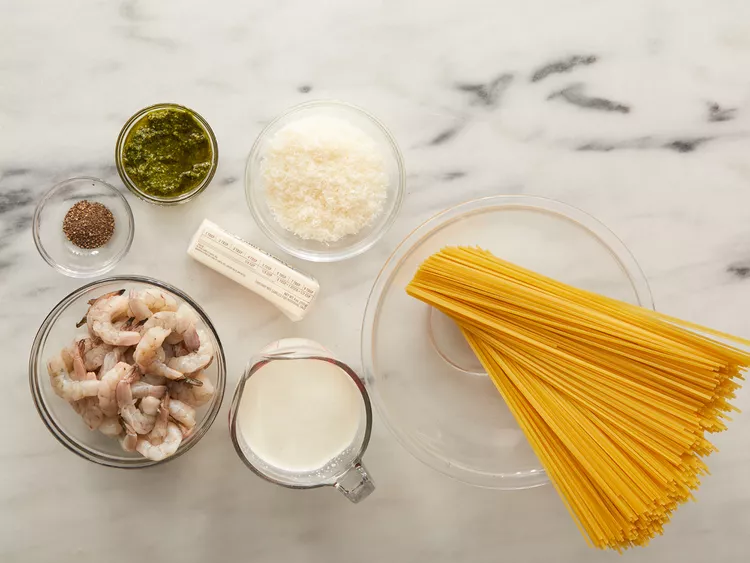
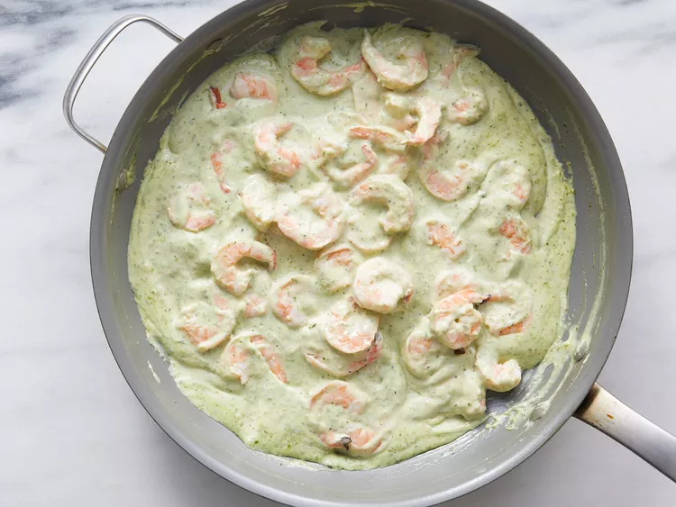

Creamy Pesto Shrimp
Homepage

Description
This creamy pesto shrimp pasta is perfect for weeknight dinners and is one of our family's favorites.
Ingredients
- 1 pound linguine pasta
- ½ cup butter
- 2 cups heavy cream
- ½ teaspoon ground black pepper
- 1 cup grated Parmesan cheese
- ⅓ cup pesto
- 1 pound large shrimp, peeled and deveined
Steps
- Gather ingredients together.

- Fill a large pot with lightly salted water and bring to a rolling boil. Stir in linguine and return to a boil. Cook pasta uncovered, stirring occasionally, until tender yet firm to the bite, about 8 to 10 minutes; drain.

- Meanwhile, melt butter in a large skillet over medium heat. Stir in cream and season with pepper; cook, stirring constantly, for 6 to 8 minutes.
- Stir Parmesan cheese into cream sauce until thoroughly mixed. Stir in pesto and cook until thickened, 3 to 5 minutes.

- Stir in shrimp and cook until they turn pink, about 5 minutes. Serve sauce over hot linguine.

- Serve hot and enjoy!